Redis常用的数据类型
RedisObject
根据类型不同，使用一个头 RedisObject 来记录（这个头占据内存16个字节）
type 数据类型
encoding 底层编码方式
lru 最后一次被访问的时间
refcount 对象引用计数器
ptr 真实数据的指针
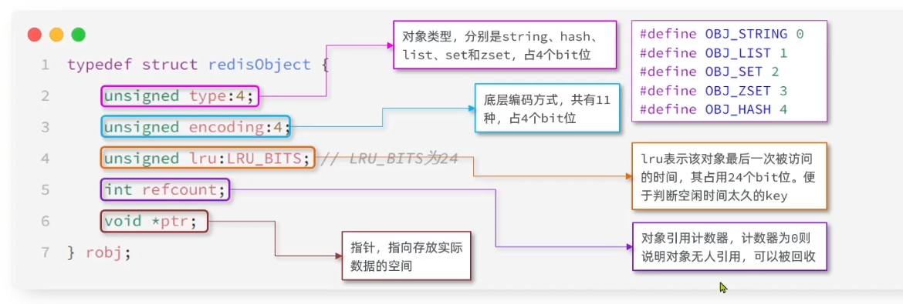
底层编码序号
共计11种，然后字符串就有三种
这里的HT就是dict
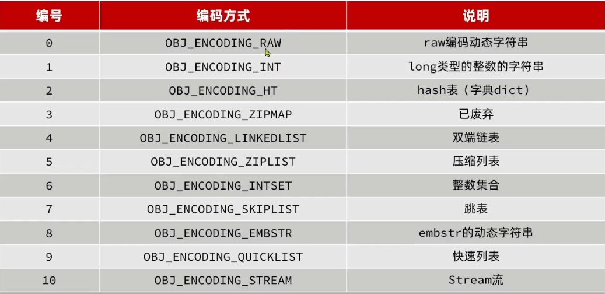
五种数据类型的编码
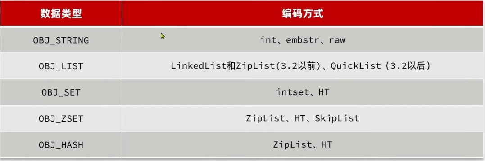
String
最常用的编码是 RAW，上限是512MB，基于SDS
如果存储的SDS小于44字节，则采用 EMBSTR编码。这个编码的 RedisObject 和 SDS 是一段连续空间。申请时只需要调用一次内存分配函数。
为什么是44字节？因为SDS中头尾加起来4字节，加上44就是48字节；
同时RedisObject头需要16字节，因此加起来需要64字节；最后 Redis 分配内存刚好是 2^n 分配，不会产生碎片！
如果存储的字符串是整数值，并且大小在LONG_MAX范围内，则会采用INT编码。直接将数据放在 ptr，不需要SDS
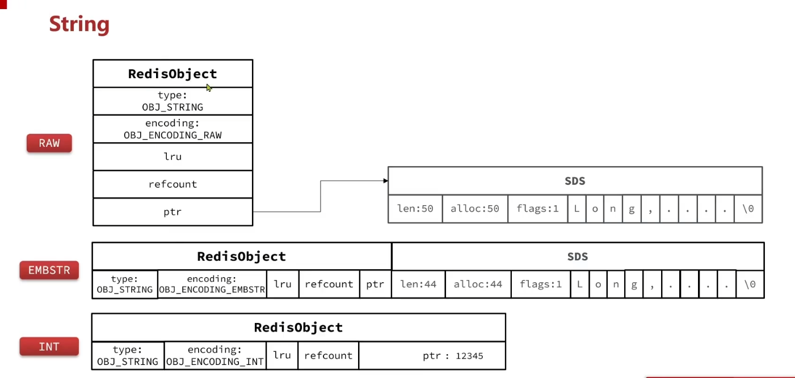
List
Redis 的 List 擅长首尾操作，也可以范围获取
如果使用链表，碎片太多，并且内存占用较高
如果使用ZipList，内存节省了，但是存储上限低
如果使用 QuickList，相当于结合两者，包含多个 ZipList，占用空间少了减少了碎片；也分片了更容易申请空间
3.2 版本以前，元素数量少于512并且元素大小小于64字节采用 ZipList 编码，超过采用 LinkedList 编码
3.2版本以后，统一采用 QuickList 实现 List
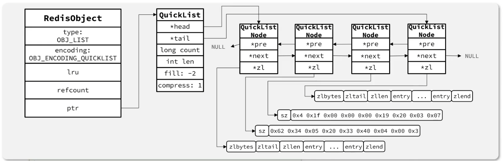
Set
Set 是 Redis 的单列集合，特点：
不保证有序
唯一
求交集，并集，差集
底层需要高效判断是否存在，查询
跳表不适合，没有序；
哈希表（Dict）适合
HT编码：Dict 的key用来存储元素，value统一为null（类似于Java的HashMap和HashSet）。代价是指针存储占空间，同时内存不连续，产生碎片。
IntSet编码：当存储的所有数据都是整数，并且数量不超过
set-max-intset-entries，Set 会采用 IntSet 编码，节省内存，查找使用二分。
如果是IntSet编码，每次插入都要判断
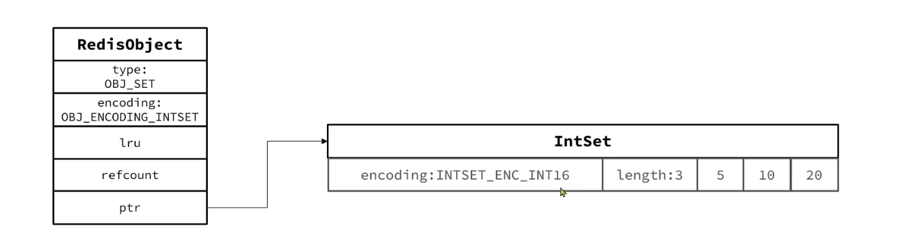
Set的HT编码
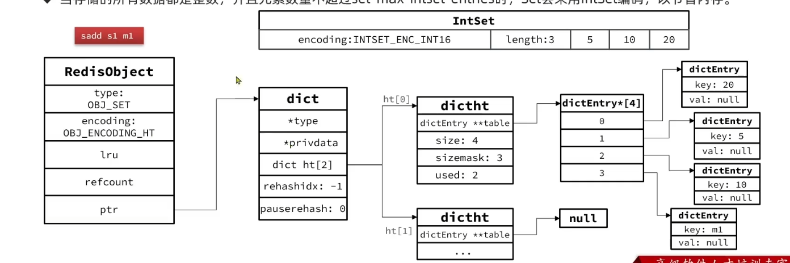
ZSet
ZSet就是 SortedSet，其中每一个元素都需要指定一个 score 和 member 值
member 必须唯一
可以根据 member 查询分数
可以根据 score 值排序
底层结构必须键值存储，键唯一，排序：跳表 SkipList
但是 score 作为了跳表的查询标识，无法满足快速根据member得到score
所以要加上HT
跳表+字典编码
但是RedisObject的编码只写了SkipList
性能好，但是指针多，占内存
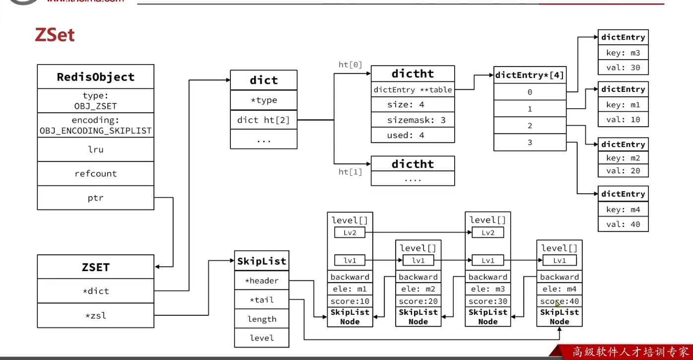
ZipList编码
元素数量小于 zset_max_ziplist_entries，默认值为128
每个元素都小于 zset_max_ziplist_value，默认值为64
因为数据量小，HT加跳表的优势不明显，反而占内存；ZipList这时候更省内存
这个就用不上 zset 这个struct 了，初始化的时候redisobject的ptr直接指向ziplist即可
zipList本身没有排序，而且没有键值对，自己编码实现：
连续内存，将score和element紧挨一起，score在前
score越小越靠近队首，升序排列
干嘛不用intset？自带排序的哟
intset只能存整数呀！不能放element
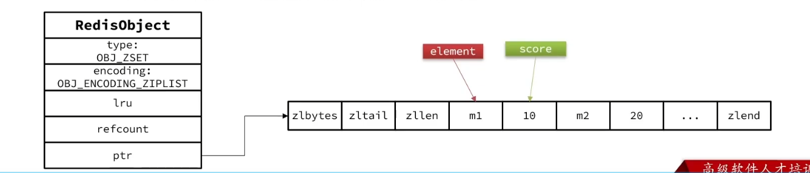
Hash
相比于Zset，hash无需排序，并且类型不限，而Zset限定score以来排序
因此Hash底层即删除 SkipList 的ZSet
默认ZipList编码，节省内存。
数据量多，转为HT编码
元素数量多于
hash-max-ziplist-entries（默认512）任意entry大小超过了
hash-max-ziplist-value（默认64字节）
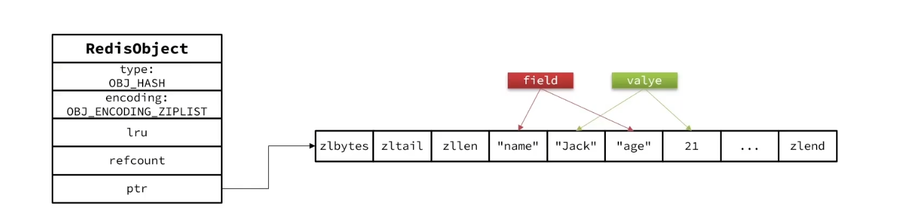
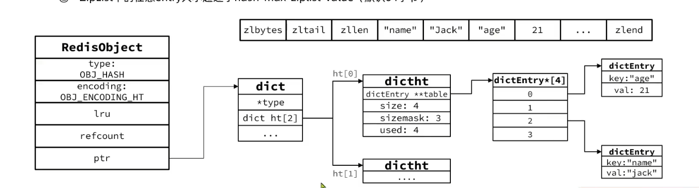